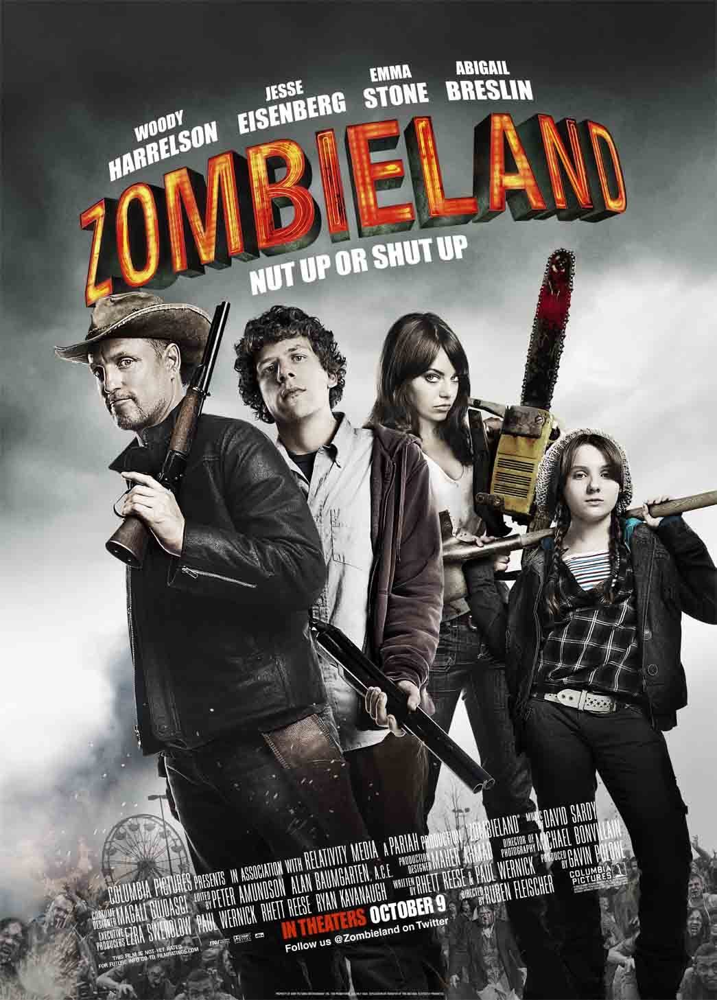
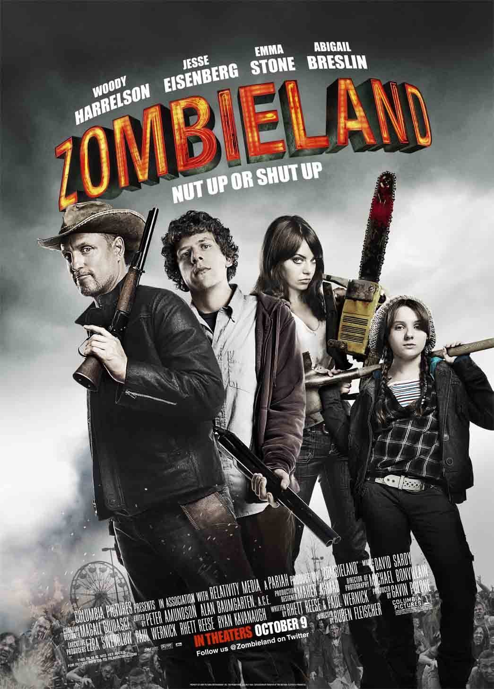

HEIGHT: 5'6" (1.68m)
Emily Jean "Emma" Stone was born on November 6, 1988 in Scottsdale, Arizona. Her parents are Krista Jean Stone, a homemaker, and Jeffrey Charles "Jeff" Stone, a contracting company founder and CEO. She started acting as a child member of the Valley Youth Theatre in Phoenix, Arizona where she made her debut on stage with "The Wind in the Willows".
She participated in more productions, until at the age of fifteen, she decided to get in the acting industry.The official story is that she made a PowerPoint presentation, backed by Madonna's "Hollywood" and itself entitled "Project Hollywood", in an attempt to persuade her parents to allow her to drop out of school and move to Los Angeles. The pitch was successful and she and her mother moved to LA with her schooling completed at home while she spent her days auditioning.
She had her TV breakthrough when she won the part of Laurie Partridge in the VH1 talent/reality show In Search of the Partridge Family (2004) which led to a number of small TV roles in the following years. Her movie debut was as Jules in Superbad (2007) and, after a string of successful performances, her leading role as Olive in Easy A (2010) established her as a star.
SPOUSE:Dave McCary
 


Person you may know:
Andrew Garfield